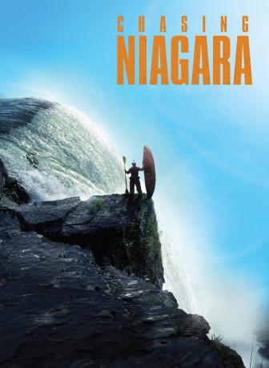

#4511 Chasing Niagara
 
 IMDB-Wertung: 6.1 / 10
IMDB-Wertung: 6.1 / 10  Metascore: 0
Metascore: 0 
When pro kayaker Rafa Ortiz decides to follow his dream to paddle over Niagara Falls, he sets in motion an incredible series of events that eventually takes on a life of its own. To prepare for this mission, Rafa enlists the help of world-renowned paddler Rush Sturges and a tight team of their friends. Together they go on a remarkable three-year journey from the rainforest rivers of Mexico to the towering waterfalls of the U.S. Northwest.
Jahr: 2015
Dauer: 76 Minuten
FSK:
Land: Österreich Studio: Studio Hamburg EnterprisesTonspuren: DD5.1 - ,
Untertitel:
Auflösung: 1080p (1920x1080) Größe: 5795 MB
Genre: Abenteuer, Dokumentation
Regisseur: Rush Sturges
Drehbuch: Alfred Cheung
Soundtrack:
Darsteller:
- Tyler Bradt als Himself
- Evan Garcia als Himself
- Mark LeBlanc als Himself
- Blake Mahoney als Himself
- Rafa Ortiz als Himself
- Aniol Serrasolses als Himself
- Gerd Serrasolses als Himself
- Rush Sturges als Himself
Datei: X:\Dokumentationen\Natur\Chasing Niagara (2015, FSK, 1920x1080).mkv seit 04.10.2016
Festplatte: HD Serien(SU-Z)+Dokus+Musik
 Es gibt insgesamt 35 Filme in der Gruppe 'Dokumentationen\Natur'
Es gibt insgesamt 35 Filme in der Gruppe 'Dokumentationen\Natur'